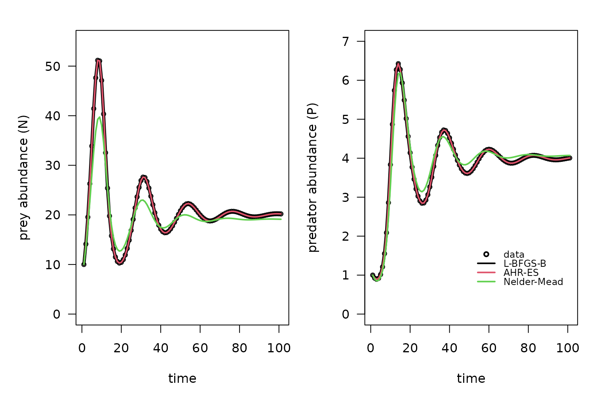

vignettes/v03-parameter_estimation_ODE.Rmd
v03-parameter_estimation_ODE.RmdThis vignette focus on the use of the calibrate() for
parameter estimation of Ordinary Differential Equations (EDO) systems.
We suggest to see the vignette ‘Getting started with the
calibrar package’ before reading this one, specially if you
do not have previous experience doing optimization in R. Reading the
vignette ‘Using the calibrate() function for parameter
estimation’ may be also very useful, as not every detail is reproduced
here.
We will estimate the parameters for a predator-prey Lotka-Volterra
model using the calibrate() function. The model is defined
by a system of ordinary differential equations for the abundance of prey
and predator
:
The parameters to estimate are the prey’s growth rate
,
the predator’s mortality rate
,
the carrying capacity of the prey
and
and
for the predation interaction. To start, we created the demonstration
data for this model using the function calibrar_demo()
function with T=100 as an additional argument to specify
the time horizon.
library(calibrar)
set.seed(880820)
path = NULL # NULL to use the current directory
LV = calibrar_demo(path=path, model='PredatorPrey', T=100) ## Creating observed data list for calibration...## Loaded observed data for variables: 'prey', 'predator'.
setup = calibration_setup(file = LV$setup)
observed = calibration_data(setup=setup, path=LV$path)## Creating observed data list for calibration...
##
## Loaded observed data for variables: 'prey', 'predator'.
run_model = calibrar:::.PredatorPreyModel
coef(LV)## $r
## [1] 0.5
##
## $l
## [1] 0.2
##
## $K
## [1] 100
##
## $alpha
## [1] 0.1
##
## $gamma
## [1] 0.1
##
## $initial
## $initial$N
## [1] 10
##
## $initial$P
## [1] 1The run_model will simulate the data, by solving the ODE
system defined by the Lotka-Volterra model:
run_model = function(par, T) {
if(!requireNamespace("deSolve", quietly = TRUE))
stop("You need to install the 'deSolve' package.")
# par is a list with 'alpha', 'beta' 'gamma', 'sd' and 'mu_ini'.
LV = function(t, y, parms, ...) {
r = parms$r
l = parms$l
alpha = parms$alpha
gamma = parms$gamma
K = parms$K
dN = r*y[1]*(1-(y[1]/K)) - alpha*y[1]*y[2]
dP = -l*y[2] + gamma*alpha*y[1]*y[2]
return(list(c(dN, dP)))
}
times = seq(0, T)
y0 = c(par$initial$N, par$initial$P)
sol = deSolve::ode(y=y0, times=times, func=LV, parms=par, method="ode45")
out = as.list(as.data.frame(sol[,-1]))
names(out) = c("prey", "predator")
out$prey[is.na(out$prey)] = 0
out$predator[is.na(out$predator)] = 0
return(out)
}The core of the run_model function relies in solving the
ODE system by using the ode() function of the
deSolve package. In general, the run_model
takes a par argument (that can be a vector or a list) and
produce a named list with the simulated data. All the intermediate code
solves the simulation problem of taking a set of parameters to produce
numerical outputs for each simulated variable. We will also define the
objective function, based on the setup created by the demo:
| variable | type | calibrate | weight | use_data | file | varid | col_skip | nrows |
|---|---|---|---|---|---|---|---|---|
| prey | lnorm2 | TRUE | 1 | TRUE | data/prey.csv | prey | 2 | NA |
| predator | lnorm2 | TRUE | 1 | TRUE | data/predator.csv | predator | 2 | NA |
The calibration_objFn() will automatically create the
objective function following the information in the setup, in this case,
by using a log-normal distribution for the errors (type)
and the same weight for both. The data is expected to be
read from the files in the file column, files that were
created when calling the demo.
# objective functions
obj = calibration_objFn(model=run_model, setup=setup, observed=observed, T=LV$T, aggregate=TRUE)Now we can fit the model using several optimization methods:
lbfgsb1 = calibrate(par=LV$guess, fn=obj, method='L-BFGS-B', lower=LV$lower, upper=LV$upper, phases=LV$phase)## Using optimization method 'L-BFGS-B'.## Elapsed time: 3.71s
## Function value: 5.60589e-07
## Parameter values: 0.5 0.2 100 0.1 0.1
##
## Status: CONVERGENCE: REL_REDUCTION_OF_F <= FACTR*EPSMCH
lbfgsb2 = calibrate(par=LV$guess, fn=obj, method="Rvmmin", lower=LV$lower, upper=LV$upper, phases=LV$phase)## Using optimization method 'Rvmmin'.## Elapsed time: 4.06s
## Function value: 5.60575e-07
## Parameter values: 0.5 0.2 100 0.1 0.1
##
## Status: Rvmminb appears to have converged
ahr = calibrate(par=LV$guess, fn=obj, method='AHR-ES', lower=LV$lower, upper=LV$upper, phases=LV$phase)## Using optimization method 'AHR-ES'.## Elapsed time: 3m 51.4s
## Function value: 5.60575e-07
## Parameter values: 0.5 0.2 100 0.1 0.1
##
## Status: Stopping criteria reached in 4909 generations.
nm = calibrate(par=LV$guess, fn=obj, method="Nelder-Mead", phases=LV$phase)## Using optimization method 'Nelder-Mead'.## Elapsed time: 57.26s
## Function value: 1.41517
## Parameter values: 0.45 0.275 66.2 0.0788 0.183
##
## Status: -And compare them:
summary(LV, lbfgsb1, lbfgsb2, ahr, nm, show_par = 1:5)## method elapsed value fn gr r l K alpha gamma
## LV data NA 4.96e-07 NA NA 0.50 0.200 100.0 0.1000 0.100
## lbfgsb1 L-BFGS-B 3.71 5.61e-07 84 84 0.50 0.200 100.0 0.1000 0.100
## lbfgsb2 Rvmmin 4.06 5.61e-07 184 81 0.50 0.200 100.0 0.1000 0.100
## ahr AHR-ES 231.41 5.61e-07 39272 0 0.50 0.200 100.0 0.1000 0.100
## nm Nelder-Mead 57.26 1.42e+00 502 NA 0.45 0.275 66.2 0.0788 0.183When a function is created with the calibration_objFn()
it gains a predict() method, that can be used to simulate
the model with the estimated set of parameters.
lbfgsb1.pred = predict(lbfgsb1)
lbfgsb2.pred = predict(lbfgsb2)
ahr.pred = predict(ahr)
nm.pred = predict(nm)and plot the results.
methods = c("data", "L-BFGS-B", "AHR-ES", "Nelder-Mead")
par(mfrow=c(1,2), mar=c(4,4,1,1),
oma=c(1,1,1,1))
plot(observed$prey, cex=0.75,
ylab="prey abundance (N)", xlab="time", las=1,
ylim=c(0,55))
lines(lbfgsb1.pred$prey, col=1, lwd=4)
lines(ahr.pred$prey, col=2, lwd=2)
lines(nm.pred$prey, col=3, lwd=2)
plot(observed$predator, cex=0.75,
ylab="predator abundance (P)", xlab="time", las=1,
ylim=c(0,7))
lines(lbfgsb1.pred$predator, col=1, lwd=4)
lines(ahr.pred$predator, col=2, lwd=2)
lines(nm.pred$predator, col=3, lwd=2)
legend(100, 1.8, legend=methods, bty="n", cex=0.75, y.intersp=0.8,
inset=-0.0, xjust=1, pch = c(1, rep(NA,5)), lty=c(0, rep(1,5)),
col=c(1,1:3), lwd=2)
In this example, the ‘L-BFGS-B’ and ‘AHR-ES’ algorithms were able to estimate the original parameter values, but the ‘Nelder-Mead’ algorithm were not.
As a second example, we will estimate the parameters for a SIR epidemiological model. The model is defined by a system of ordinary differential equations for the number of susceptible , infected and recovered individuals:
The parameters to estimate are the average number of contacts per
person per time
and the instant probability of an infectious individual recovering
.
To start, we created the demonstration data for this model using the
function calibrar_demo() function with T=100
as an additional argument to specify the time horizon.
path = NULL # NULL to use the current directory
SIR = calibrar_demo(path=path, model='SIR', T=100) ## Creating observed data list for calibration...## Loaded observed data for variables: 'susceptible', 'infected', 'recovered'.
setup = calibration_setup(file = SIR$setup)
observed = calibration_data(setup=setup, path=SIR$path)## Creating observed data list for calibration...
##
## Loaded observed data for variables: 'susceptible', 'infected', 'recovered'.
run_model = calibrar:::.SIRModelTo simulate the model, we will create a function taking a vector or
list of parameters par, that solves the EDO system and
return a list with the simulated variables
(,
,
):
run_model = function(par, T) {
if(!requireNamespace("deSolve", quietly = TRUE))
stop("You need to install the 'deSolve' package.")
# par is a list with 'alpha', 'beta' 'gamma', 'sd' and 'mu_ini'.
SIR = function(t, y, parms, ...) {
N = sum(unlist(parms$initial))
beta = parms$beta
gamma = parms$gamma
S = y[1]
I = y[2]
dS = -beta*S*I/N
dI = +beta*S*I/N -gamma*I
dR = +gamma*I
return(list(c(dS, dI, dR)))
}
times = seq(0, T)
y0 = c(par$initial$S, par$initial$I, par$initial$R)
sol = deSolve::ode(y=y0, times=times, func=SIR, parms=par, method="ode45")
out = as.list(as.data.frame(sol[,-1]))
names(out) = c("susceptible", "infected", "recovered")
out$susceptible[is.na(out$susceptible)] = 0
out$infected[is.na(out$infected)] = 0
out$recovered[is.na(out$recovered)] = 0
return(out)
}As in the previous example, the objective function will be created
based on the run_model() function and the information in
the setup table created with the demo:
| variable | type | calibrate | weight | use_data | file | varid | col_skip | nrows |
|---|---|---|---|---|---|---|---|---|
| susceptible | lnorm2 | TRUE | 1 | TRUE | data/susceptible.csv | susceptible | 2 | NA |
| infected | lnorm2 | TRUE | 1 | TRUE | data/infected.csv | infected | 2 | NA |
| recovered | lnorm2 | TRUE | 1 | TRUE | data/recovered.csv | recovered | 2 | NA |
obj = calibration_objFn(model=run_model, setup=setup, observed=observed, T=SIR$T, aggregate=TRUE)Now, we can try several optimization algorithms to estimate the parameters of the model:
lbfgsb3 = calibrate(par=SIR$guess, fn=obj, method='LBFGSB3', lower=SIR$lower, upper=SIR$upper, phases=SIR$phase)## Using optimization method 'LBFGSB3'.## Elapsed time: 1.36s
## Function value: 7.57138e-13
## Parameter values: 0.4 0.2
##
## Status: CONVERGENCE: Parameters differences below xtol
lbfgsb2 = calibrate(par=SIR$guess, fn=obj, method='Rvmmin', lower=SIR$lower, upper=SIR$upper, phases=SIR$phase)## Using optimization method 'Rvmmin'.## Elapsed time: 0.39s
## Function value: 7.56969e-13
## Parameter values: 0.4 0.2
##
## Status: Rvmminb appears to have converged
ahr = calibrate(par=SIR$guess, fn=obj, method='AHR-ES', lower=SIR$lower, upper=SIR$upper, phases=SIR$phase)## Using optimization method 'AHR-ES'.## Elapsed time: 33.41s
## Function value: 9.63009e-22
## Parameter values: 0.4 0.2
##
## Status: Stopping criteria reached in 1031 generations.
cg = calibrate(par=SIR$guess, fn=obj, method='Rcgmin', phases=SIR$phase)## Using optimization method 'Rcgmin'.## Elapsed time: 2m 43.4s
## Function value: 1.51603e-14
## Parameter values: 0.4 0.2
##
## Status: Rcgmin seems to have converged
nm = calibrate(par=SIR$guess, fn=obj, method='Nelder-Mead', phases=SIR$phase)## Using optimization method 'Nelder-Mead'.## Elapsed time: 0.36s
## Function value: 2.5122e-05
## Parameter values: 0.4 0.2
##
## Status: -and compare them:
summary(SIR, lbfgsb2, lbfgsb3, ahr, cg, nm, show_par = 1:2)## method elapsed value fn gr beta gamma
## SIR data NA 4.69e-28 NA NA 0.4 0.2
## lbfgsb2 Rvmmin 0.387 7.57e-13 25 16 0.4 0.2
## lbfgsb3 LBFGSB3 1.360 7.57e-13 24 24 0.4 0.2
## ahr AHR-ES 33.414 9.63e-22 6186 0 0.4 0.2
## cg Rcgmin 163.371 1.52e-14 69 26 0.4 0.2
## nm Nelder-Mead 0.366 2.51e-05 73 NA 0.4 0.2In this example, the algorithms ‘Rvmmin’, ‘AHR-ES’, ‘Rcgmin’ and ‘Nelder-Mead’ are able to estimate the original parameters, but the ‘LBFGSB3’ fails.
Please, refer to vignette(package="calibrar") for
additional vignettes or to the calibrar website
for more details.